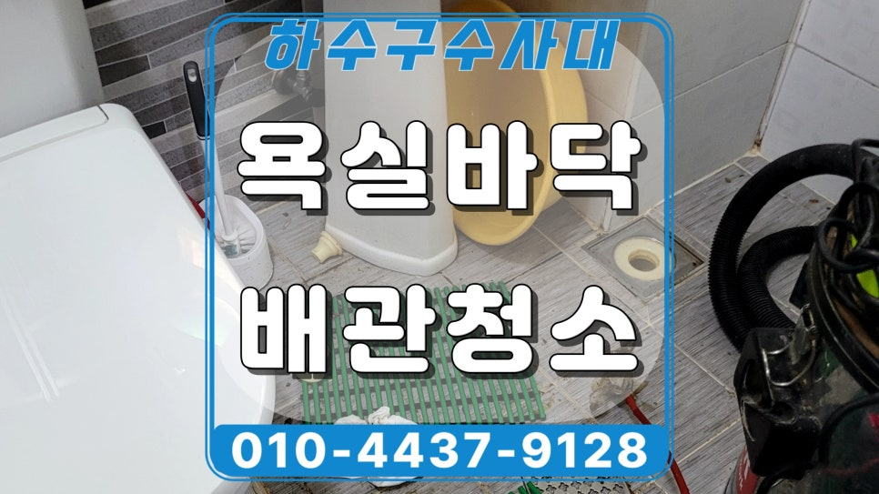
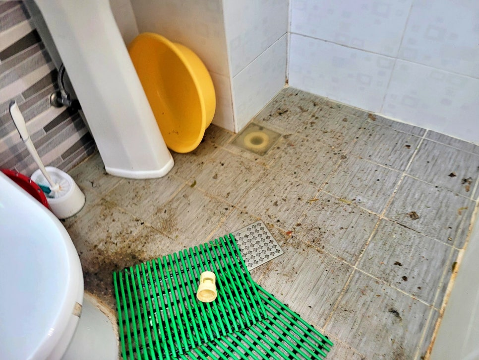
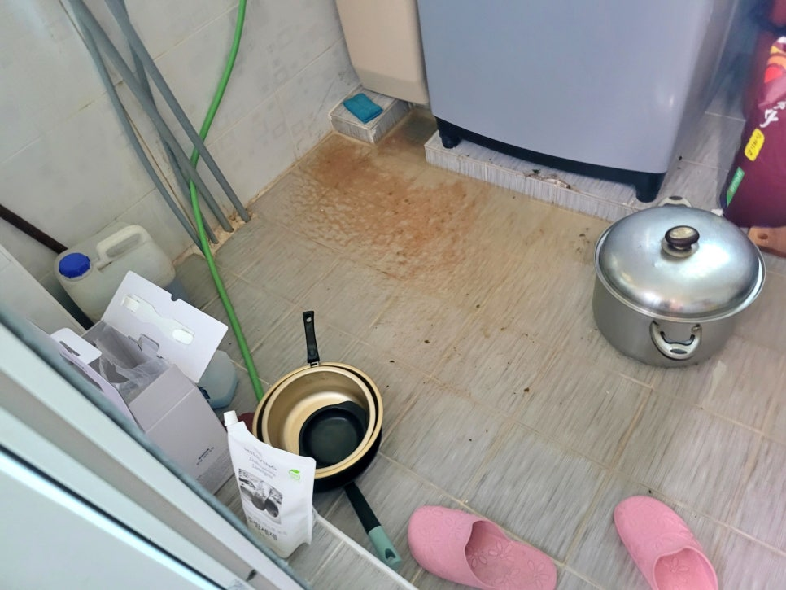
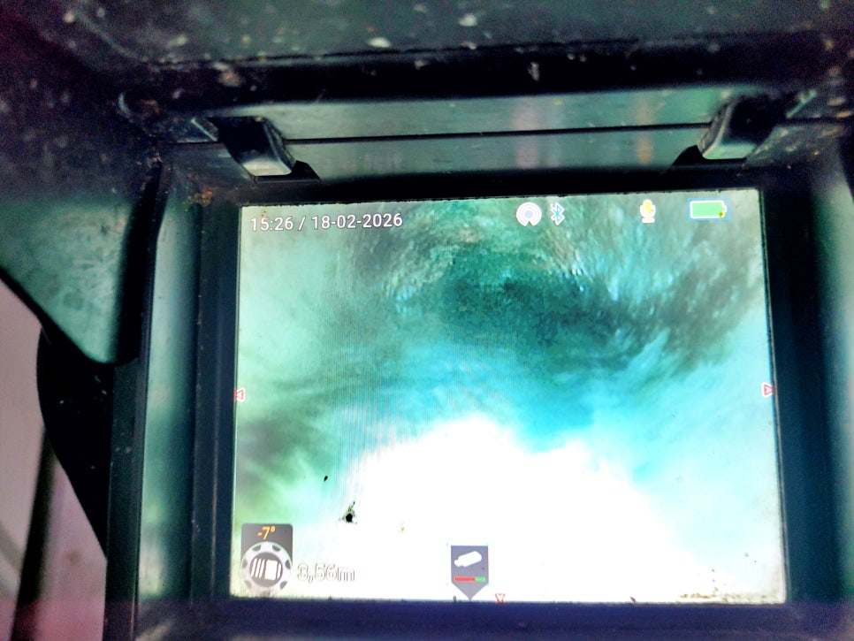
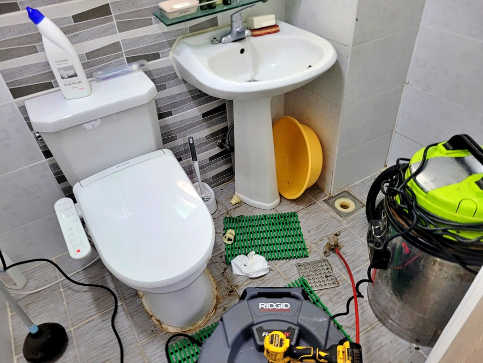
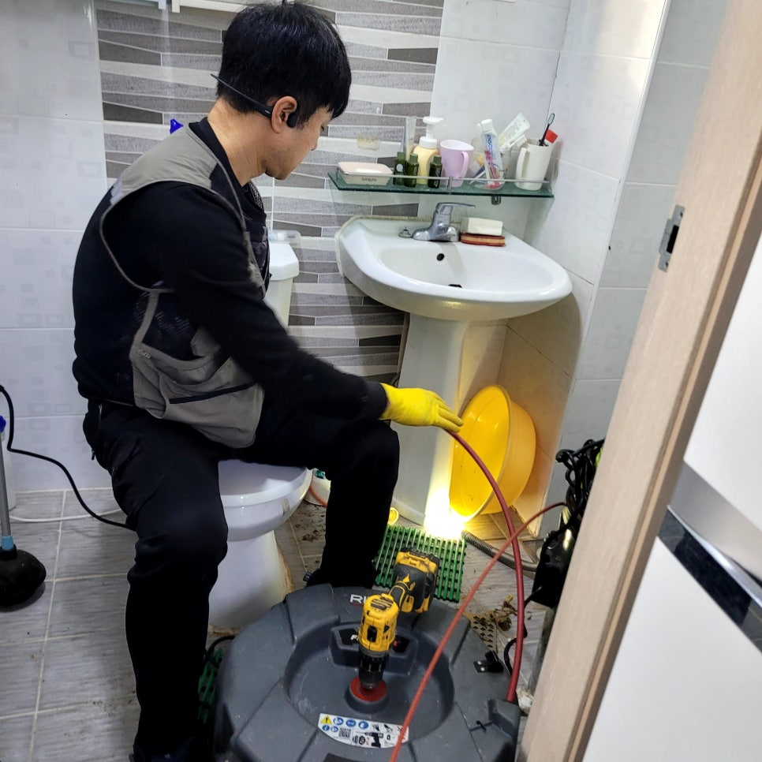
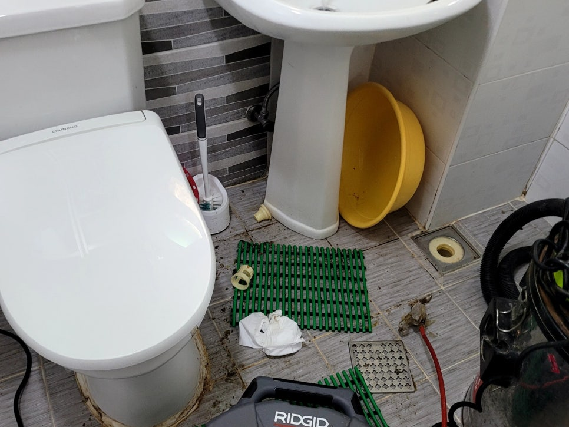

🏠 화성 만세구 세탁실 하수구역류, 욕실 동시 역류 원인 공개합니다
화성 하수구막힘 전문 시공 후기

📋 작업 개요
- 위치: 화성
- 서비스 유형: 하수구막힘, 배관막힘, 역류해결, 뚫는업체, 배관청소
- 작업 일시: 2026. 3. 18. 17:38
- 업체명: 하수구수사대 (010-5615-2118)
🔍 문제 상황
화성 만세구 전원주택 하수구와 욕실
역류 동시에 발생한 원인을 공개합니다.
안녕하세요?
화성 만세구 세탁실 욕실 하수구역류
배관청소업체 하수구수사대입니다.
화성 만세구에서 하수구막힘이나 역류
문제로 배관청소업체를 찾고 계셨다면
오늘 사례가 도움이 되실 텐데요.
이번 사례는
감안면의 한 전원주택 욕실과 세탁실
배수구가 함께 역류해 저희가 해결한
현장입니다.
욕실 바닥 배수구 역류 현장
현장에 도착해 바닥 상태를 살펴보니
세탁실과 욕실 쪽 배수구 주변으로
오수가 올라오며 바닥이 어지럽혀진
상태라 신속한 조치가 필요했는데요.
지금부터 그 이후 저희가 어떻게
문제를 해결했는지 전 과정을

🔎 원인 분석
💡 전문가 진단: 화성 만세구 전원주택 하수구와 욕실역류 동시에 발생한 원인을 공개합니다.
상세히 소개하겠습니다.
화성 만세구 세탁실 하수구역류 원인?
세탁실 하수구역류 현장 모습
먼저 두 공간이 각각 막힌 것인지
아니면 한쪽 배관 문제로 함께 영향을
받는 구조인지 점검을 시작했는데요.
내시경 카메라를 투입해 내부를
점검해 보니 욕실과 세탁실 배수
라인이 함께 연결돼 공용관으로
빠져나가는 구조였고, 그 구간에는
기름 찌꺼기가 두껍게 쌓여 배수를
막고 있었습니다.
세탁실과 욕실 하수구 배관 청소작업
화성 만세구 세탁실 하수구역류 원인을
파악한 저희는 욕실과 세탁실 양쪽을
오가며 샤프트 작업으로 내부를
꼼꼼하게 청소했는데요.
화성 만세구 배관 청소과정
한 번에 끝나는 가벼운 막힘이 아니라

🔧 작업 과정
배관 벽면에 들러붙은 기름층이 워낙
두터워 여러 차례 장비를 투입하며
조금씩 이물질을 제거하는 방식으로
꼼꼼하게 작업을 이어갔습니다.
배관 청소 작업 중간마다 배관 상태를
다시 확인해가며 막힌 구간이 얼마나
정리됐는지 살펴봤고, 잔여 기름층이
남지 않도록 마무리까지 빈틈없이
진행했습니다.
화성 만세구 전원주택 하수구역류
배관 청소 작업은 위쪽 세탁실부터
시작해 아래 욕실 배수가 방향으로
샤프트 노즐을 투입했는데요.
막힌 구간이 모두 뚫린 후에는 다시
내시경 카메라를 투입해 깨끗해진
내부 모습을 고객님께도 보여드리고
배수 테스트를 진행했습니다.
세탁실에서 시작한 배수 테스트에서
욕실 바닥으로 역류 없이 시원하게
공용 하수관으로 내려가는 모습을
고개님과 함께 확인했고요.
세탁실과 욕실 바닥에 물 청소를
진행해 깨끗하게 정리해드렸습니다.
오늘의 작업을 마치며
오늘 소개한
화성 만세구 감암면 전원주택 하수구역류
청소 후기를 마칠 시간이 됐는데요.
이번 현장은 같은 배관을 사용하는
구조로 최종 출수구가 기름으로 막혀
역류했던 사례였습니다.


✅ 작업 완료
이러한 구조는 아래 쪽이 막히면 동시에
역류가 발생하기 쉬운 만큼 문제 발생
초기에 하수구수사대를 불러 주십시오.
이상으로
"화성 만세구 세탁실 하수구역류
배관청소" 후기를 마치겠습니다.
감사합니다.
#화성만세구세탁실하수구역류 #화성만세구하수구업체 #화성감암면하수구막힘 #화성전원주택하수구역류 #화성배관청소업체 #화성만세구배관청소업체 #화성배관내시경청소




⚠️ 하수구 배관 막힘 예방 및 관리 가이드
- ✅ 머리카락, 비닐, 물티슈 등 물에 분해되지 않는 이물질은 하수구 유입을 절대 금지해 주세요.
- ✅ 하수구 거름망을 씌우고 모여진 이물질은 주기적으로 쓰레기통에 바로 비워주셔야 합니다.
- ✅ 배관 노후가 심할 경우 이물질이 더 쉽게 걸리므로 주기적인 배관 세척(고압세척 등)을 권장합니다.
- ✅ 작업 후 1년 이내 재발 시 하수구수사대에서 무상 A/S 보증 서비스를 제공합니다.
💡 핵심 정리
- 확실한 장비 작업(내시경 점검 및 샤프트 스케일링)으로 원인을 뿌리 뽑습니다.
- 작업 후 1년 이내에 동일한 부위 재발 시 100% 무상 A/S 서비스를 보장합니다.
- 서울 · 경기 · 인천 전 지역에 24시간 언제든 긴급 출동할 수 있도록 항시 대기 중입니다.
❓ 자주 묻는 질문 (FAQ)
🚨 화성 하수구막힘 문제로 고민이신가요?
정확한 원인 진단과 확실한 시공으로 재발 없는 해결을 약속드립니다.
24시간 긴급 출동 | 서울 · 경기 · 인천 전지역 | 1년 내 재발 시 무상 A/S